Diverse Applications of Technology
Emotional stability. Better relationships. CLAM-IX supports every aspect of your daily life

Education
Helping students stay focused, calm, and socially adaptive in high-pressure environments

Family Dynamics
Fostering healthier communication and emotional understanding between family members

Public Security
Preventing violent incidents before they happen through real-time emotional monitoring
×